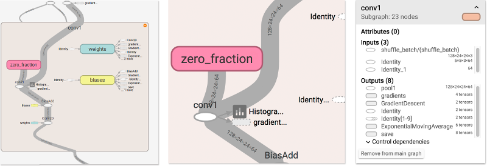
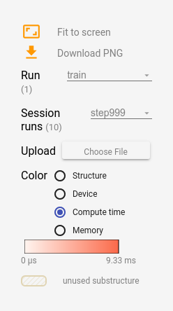
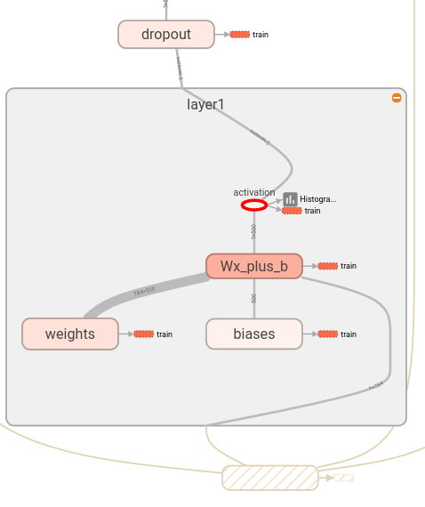

TensorBoard: Graph Visualization
TensorFlow computation graphs are powerful but complicated. The graph visualization can help you understand and debug them. Here’s an example of the visualization at work.
 Visualization of a TensorFlow graph.
Visualization of a TensorFlow graph.
To see your own graph, run TensorBoard pointing it to the log directory of the job, click on the graph tab on the top pane and select the appropriate run using the menu at the upper left corner. For in depth information on how to run TensorBoard and make sure you are logging all the necessary information, see TensorBoard: Visualizing Learning.
You can interact with an instance of TensorBoard looking at data from an MNIST training session, including the graph visualization, by clicking here.
Name scoping and nodes
Typical TensorFlow graphs can have many thousands of nodes–far too many to see easily all at once, or even to lay out using standard graph tools. To simplify, variable names can be scoped and the visualization uses this information to define a hierarchy on the nodes in the graph. By default, only the top of this hierarchy is shown. Here is an example that defines three operations under the hidden name scope using tf$name_scope:
with(tf$name_scope("hidden") %as% scope, {
a <- tf$constant(5L, name="alpha")
W <- tf$Variable(tf$random_uniform(shape(1L, 2L), -1.0, 1.0), name="weights")
b <- tf$Variable(tf.zeros(shape(1L), name="biases"))
})This results in the following three op names:
- hidden/alpha
- hidden/weights
- hidden/biases
By default, the visualization will collapse all three into a node labeled hidden. The extra detail isn’t lost. You can double-click, or click on the orange + sign in the top right to expand the node, and then you’ll see three subnodes for alpha, weights and biases.
Here’s a real-life example of a more complicated node in its initial and expanded states.

|

|
Initial view of top-level name scope pool_1. Clicking on the orange + button on the top right or double-clicking on the node itself will expand it.
|
Expanded view of pool_1 name scope. Clicking on the orange - button on the top right or double-clicking on the node itself will collapse the name scope.
|
Grouping nodes by name scopes is critical to making a legible graph. If you’re building a model, name scopes give you control over the resulting visualization. The better your name scopes, the better your visualization.
The figure above illustrates a second aspect of the visualization. TensorFlow graphs have two kinds of connections: data dependencies and control dependencies. Data dependencies show the flow of tensors between two ops and are shown as solid arrows, while control dependencies use dotted lines. In the expanded view (right side of the figure above) all the connections are data dependencies with the exception of the dotted line connecting CheckNumerics and control_dependency.
There’s a second trick to simplifying the layout. Most TensorFlow graphs have a few nodes with many connections to other nodes. For example, many nodes might have a control dependency on an initialization step. Drawing all edges between the init node and its dependencies would create a very cluttered view.
To reduce clutter, the visualization separates out all high-degree nodes to an auxiliary area on the right and doesn’t draw lines to represent their edges. Instead of lines, we draw small node icons to indicate the connections. Separating out the auxiliary nodes typically doesn’t remove critical information since these nodes are usually related to bookkeeping functions. See Interaction for how to move nodes between the main graph and the auxiliary area.

|

|
Node conv_1 is connected to save. Note the little save node icon on its right.
|
save has a high degree, and will appear as an auxiliary node. The connection with conv_1 is shown as a node icon on its left. To further reduce clutter, since save has a lot of connections, we show the first 5 and abbreviate the others as ... 12 more.
|
One last structural simplification is series collapsing. Sequential motifs–that is, nodes whose names differ by a number at the end and have isomorphic structures–are collapsed into a single stack of nodes, as shown below. For networks with long sequences, this greatly simplifies the view. As with hierarchical nodes, double-clicking expands the series. See Interaction for how to disable/enable series collapsing for a specific set of nodes.

|

|
| A collapsed view of a node sequence. | A small piece of the expanded view, after double-click. |
Finally, as one last aid to legibility, the visualization uses special icons for constants and summary nodes. To summarize, here’s a table of node symbols:
| Symbol | Meaning |
|---|---|
 |
High-level node representing a name scope. Double-click to expand a high-level node. |
 |
Sequence of numbered nodes that are not connected to each other. |
 |
Sequence of numbered nodes that are connected to each other. |
 |
An individual operation node. |
 |
A constant. |
 |
A summary node. |
 |
Edge showing the data flow between operations. |
 |
Edge showing the control dependency between operations. |
 |
A reference edge showing that the outgoing operation node can mutate the incoming tensor. |
Interaction
Navigate the graph by panning and zooming. Click and drag to pan, and use a scroll gesture to zoom. Double-click on a node, or click on its + button, to expand a name scope that represents a group of operations. To easily keep track of the current viewpoint when zooming and panning, there is a minimap in the bottom right corner.
To close an open node, double-click it again or click its - button. You can also click once to select a node. It will turn a darker color, and details about it and the nodes it connects to will appear in the info card at upper right corner of the visualization.

|

|
Info card showing detailed information for the conv2 name scope. The inputs and outputs are combined from the inputs and outputs of the operation nodes inside the name scope. For name scopes no attributes are shown.
|
Info card showing detailed information for the DecodeRaw operation node. In addition to inputs and outputs, the card shows the device and the attributes associated with the current operation.
|
TensorBoard provides several ways to change the visual layout of the graph. This doesn’t change the graph’s computational semantics, but it can bring some clarity to the network’s structure. By right clicking on a node or pressing buttons on the bottom of that node’s info card, you can make the following changes to its layout:
- Nodes can be moved between the main graph and the auxiliary area.
- A series of nodes can be ungrouped so that the nodes in the series do not appear grouped together. Ungrouped series can likewise be regrouped.
Selection can also be helpful in understanding high-degree nodes. Select any high-degree node, and the corresponding node icons for its other connections will be selected as well. This makes it easy, for example, to see which nodes are being saved–and which aren’t.
Clicking on a node name in the info card will select it. If necessary, the viewpoint will automatically pan so that the node is visible.
Finally, you can choose two color schemes for your graph, using the color menu above the legend. The default Structure View shows structure: when two high-level nodes have the same structure, they appear in the same color of the rainbow. Uniquely structured nodes are gray. There’s a second view, which shows what device the different operations run on. Name scopes are colored proportionally to the fraction of devices for the operations inside them.
The images below give an illustration for a piece of a real-life graph.

|

|
Structure view: The gray nodes have unique structure. The orange conv1 and conv2 nodes have the same structure, and analogously for nodes with other colors.
|
Device view: Name scopes are colored proportionally to the fraction of devices of the operation nodes inside them. Here, purple means GPU and the green is CPU. |
Tensor shape information
When the serialized GraphDef includes tensor shapes, the graph visualizer labels edges with tensor dimensions, and edge thickness reflects total tensor size. To include tensor shapes in the GraphDef pass the actual graph object (as in sess.graph) to the tf$summary$FileWriter when serializing the graph. The images below show the CIFAR-10 model with tensor shape information:
|  |
| CIFAR-10 model with tensor shape information. |
Runtime statistics
Often it is useful to collect runtime metadata for a run, such as total memory usage, total compute time, and tensor shapes for nodes. The code example below is a snippet from the train and test section of a modification of the simple MNIST tutorial, in which we have recorded summaries and runtime statistics. See the Summaries Tutorial for details on how to record summaries. Full source is here.
# Train the model, and also write summaries.
# Every 10th step, measure test-set accuracy, and write test summaries
# All other steps, run train_step on training data, & add training summaries
# Make a TensorFlow feed_dict: maps data onto Tensor placeholders.
feed_dict <- function(train) {
if (train || FLAGS$fake_data) {
batch <- mnist$train$next_batch(100L, fake_data = FLAGS$fake_data)
xs <- batch[[1]]
ys <- batch[[2]]
k <- FLAGS$dropout
} else {
xs <- mnist$test$images
ys <- mnist$test$labels
k <- 1.0
}
dict(x = xs,
y_ = ys,
keep_prob = k)
}
for (i in 1:FLAGS$max_steps) {
if (i %% 10 == 0) { # Record summaries and test-set accuracy
result <- sess$run(list(merged, accuracy), feed_dict = feed_dict(FALSE))
summary <- result[[1]]
acc <- result[[2]]
test_writer$add_summary(summary, i)
} else { # Record train set summaries, and train
if (i %% 100 == 99) { # Record execution stats
run_options <- tf$RunOptions(trace_level = tf$RunOptions()$FULL_TRACE)
run_metadata <- tf$RunMetadata()
result <- sess$run(list(merged, train_step),
feed_dict = feed_dict(TRUE),
options = run_options,
run_metadata = run_metadata)
summary <- result[[1]]
train_writer$add_run_metadata(run_metadata, sprintf("step%03d", i))
train_writer$add_summary(summary, i)
cat("Adding run metadata for ", i, "\n")
} else { # Record a summary
result <- sess$run(list(merged, train_step), feed_dict = feed_dict(TRUE))
summary <- result[[1]]
train_writer$add_summary(summary, i)
}
}
}This code will emit runtime statistics for every 100th step starting at step99.
When you launch tensorboard and go to the Graph tab, you will now see options under “Session runs” which correspond to the steps where run metadata was added. Selecting one of these runs will show you the snapshot of the network at that step, fading out unused nodes. In the controls on the left hand side, you will be able to color the nodes by total memory or total compute time. Additionally, clicking on a node will display the exact total memory, compute time, and tensor output sizes.
|  |  |

|